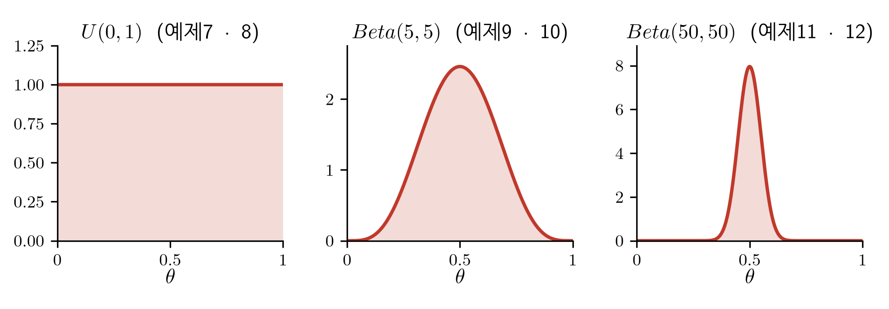
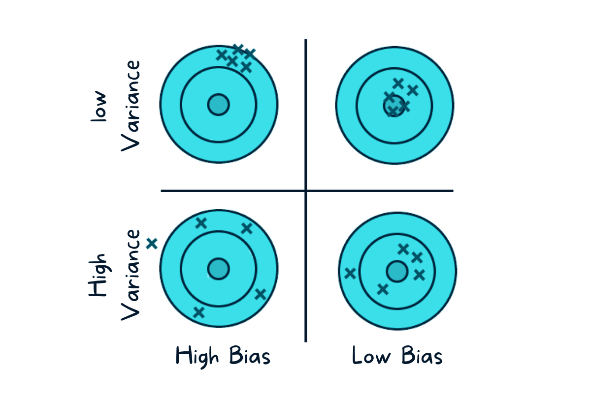
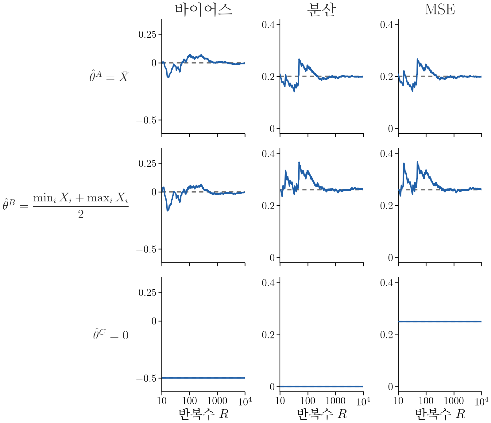

11wk-2: 베이지안식 해석 (2)
1. 강의영상
2. 켤레 사전분포
A. 개념
- 11wk-1의 예제 7,8,9,10,11,12 의 사전분포를 다시 관찰하자.

- 사실 \(U(0,1)\)은 \(Beta(1,1)\)로 해석할 수 있으므로 위의 사전분포는 모두 \(Beta(a,b)\)를 쓴 것이다.
\(Beta(a,b)\) 위젯 — \(a\), \(b\) 를 움직여 보자
- 생각해보니까 \(Beta(a,b)\)는 \(Ber(\theta)\)에서 \(\theta\)의 사전분포로 너무 찰떡이다.
- 마침 \(Beta(a,b)\)를 따르는 확률변수는 0~1사이의 값을 가지는데 이게 \(\theta\)가 가지는 범위와 정확하게 같다.
- \(\theta\)에 대한 주관적인 믿음정도를 \(a,b\)를 이용하여 조정할 수 있다.
- (비워둠)
- 더 찰떡인 사실: 사전분포와 사후분포가 모두 베타임!!
11wk-1 예제12 (사전분포 \(Beta(50,50)\)) Before · After
베타분포 \(Beta(a,b)\) 의 pdf
\[\pi(\theta)=\frac{\theta^{a-1}(1-\theta)^{b-1}}{B(a,b)}\quad(0<\theta<1),\qquad B(a,b)=\int_0^1\theta^{a-1}(1-\theta)^{b-1}\,d\theta\]
Before — 11wk-1 예제12 그대로
Step1 – 사전분포(연속형)
\[\pi(\theta)=\begin{cases}\frac{\theta^{49}(1-\theta)^{49}}{B(50,50)} & (0<\theta<1)\\ 0 & (\text{그 외})\end{cases}\]
Step2 – 가능도
\[L(\theta)=\theta^{\sum x_i}(1-\theta)^{n-\sum x_i}\qquad(0\le\theta\le1)\]
Step3 – 사전분포 \(\times\) 가능도
\[\pi(\theta)\times L(\theta)=\frac{\theta^{\sum x_i+49}(1-\theta)^{n-\sum x_i+49}}{B(50,50)}\]
Step4 – 정규화상수
\[ \begin{align*} \MoveEqLeft[2] \int_0^1\frac{\theta^{\sum x_i+49}(1-\theta)^{n-\sum x_i+49}}{B(50,50)}\,d\theta \\ &=\frac{1}{B(50,50)}\cdot\frac{(\sum x_i+49)!\,(n-\sum x_i+49)!}{(n+99)!} \\ &=\frac{B(\sum x_i+50,\ n-\sum x_i+50)}{B(50,50)} \end{align*} \]
(둘째 줄은 11wk-1 예제5 Step4 의 식)
Step5 – 사후분포(연속형)
\[ \begin{align*} \MoveEqLeft[2] \pi(\theta\mid\text{data})=\frac{\pi(\theta)\times L(\theta)}{\int\pi(\theta)L(\theta)\,d\theta} \\ &=\frac{\theta^{\sum x_i+49}(1-\theta)^{n-\sum x_i+49}}{B(\sum x_i+50,\ n-\sum x_i+50)} \end{align*} \]
After — Step5 에서 베타를 드러내면
Step1 – 사전분포(연속형)
\[\pi(\theta)=\begin{cases}\frac{\theta^{49}(1-\theta)^{49}}{B(50,50)} & (0<\theta<1)\\ 0 & (\text{그 외})\end{cases}\]
Step2 – 가능도
\[L(\theta)=\theta^{\sum x_i}(1-\theta)^{n-\sum x_i}\qquad(0\le\theta\le1)\]
Step3 – 사전분포 \(\times\) 가능도
\[\pi(\theta)\times L(\theta)=\frac{\theta^{\sum x_i+49}(1-\theta)^{n-\sum x_i+49}}{B(50,50)}\]
Step4 – 정규화상수
\[ \begin{align*} \MoveEqLeft[2] \int_0^1\frac{\theta^{\sum x_i+49}(1-\theta)^{n-\sum x_i+49}}{B(50,50)}\,d\theta \\ &=\frac{1}{B(50,50)}\cdot\frac{(\sum x_i+49)!\,(n-\sum x_i+49)!}{(n+99)!} \\ &=\frac{B(\sum x_i+50,\ n-\sum x_i+50)}{B(50,50)} \end{align*} \]
(둘째 줄은 11wk-1 예제5 Step4 의 식)
Step5 – 사후분포(연속형)
\[ \begin{align*} \MoveEqLeft[2] \pi(\theta\mid\text{data})=\frac{\pi(\theta)\times L(\theta)}{\int\pi(\theta)L(\theta)\,d\theta} \\ &=\frac{\theta^{\sum x_i+49}(1-\theta)^{n-\sum x_i+49}}{B(\sum x_i+50,\ n-\sum x_i+50)} \\ &=\color{red}{\frac{\theta^{(\sum x_i+50)-1}(1-\theta)^{(n-\sum x_i+50)-1}}{B(\sum x_i+50,\ n-\sum x_i+50)}} \end{align*} \]
\[\color{red}{\therefore\ \theta\mid\text{data}\sim Beta(\textstyle\sum x_i+50,\ n-\sum x_i+50)}\]
요약: \(X_1,\dots,X_n \sim Ber(\theta)\)의 사전분포가 \(\theta \sim Beta(a,b)\) 이면 사후분포는 늘 아래와 같다.
\[\theta\mid x_1,\dots,x_n \sim Beta\Big(a+\sum x_i,\ b+n-\sum x_i\Big)\]
앞선 다른예제상황
| 11wk-1 | 참값 | 사전분포 | 사후분포 | 사후평균 |
|---|---|---|---|---|
| 예제7 | \(\theta=0.5\) | \(U(0,1)=Beta(1,1)\) | \(Beta(\sum x_i+1,\ n-\sum x_i+1)\) | \(\frac{\sum x_i+1}{n+2}\) |
| 예제8 | \(\theta=0.6\) | \(U(0,1)=Beta(1,1)\) | \(Beta(\sum x_i+1,\ n-\sum x_i+1)\) | \(\frac{\sum x_i+1}{n+2}\) |
| 예제9 | \(\theta=0.5\) | \(Beta(5,5)\) | \(Beta(\sum x_i+5,\ n-\sum x_i+5)\) | \(\frac{\sum x_i+5}{n+10}\) |
| 예제10 | \(\theta=0.6\) | \(Beta(5,5)\) | \(Beta(\sum x_i+5,\ n-\sum x_i+5)\) | \(\frac{\sum x_i+5}{n+10}\) |
| 예제11 | \(\theta=0.5\) | \(Beta(50,50)\) | \(Beta(\sum x_i+50,\ n-\sum x_i+50)\) | \(\frac{\sum x_i+50}{n+100}\) |
| 예제12 | \(\theta=0.6\) | \(Beta(50,50)\) | \(Beta(\sum x_i+50,\ n-\sum x_i+50)\) | \(\frac{\sum x_i+50}{n+100}\) |
- 아무튼 아래가 주는 이득이 무엇인가?
더 찰떡인 사실: 사전분포와 사후분포가 모두 베타임!!
- 사전분포를 찰떡으로 주면, 사후분포 계산이 사라진다. (이미 계산된걸 활용)
- 계산만 편해지는게 아니라 주관적인 믿음 정도를 어느정도 자유롭게 조정 가능하다.
- 사전분포의 모수가 가지는 의미를 “데이터로” 쉽게 환산할 수 있다. 예를 들어 \(Beta(5,5)\) 는 앞면 5번 · 뒷면 5번, 곧 동전을 10번 던져 본 셈이다.
“Conjugate prior distributions have the practical advantage, in addition to computational convenience, of being interpretable as additional data, …” (Gelman et al., 2013, p. 36)
- 사전분포와 사후분포가 같은 분포족(같은 꼴의 분포)을 따르는 경우, 그 사전분포를 (그 가능도에 대한) 켤레 사전분포, 줄여서 켤레분포라 한다. 예를 들어 \(Beta(a,b)\) 는 \(Ber(\theta)\) 의 켤레 사전분포다.
- 모든 분포가 켤레를 가지는 것은 아님
- 지수족은 무조건 켤레를 가짐 (지수족을 모른다면 이 문장은 무시)
자료 하나의 분포가 지수족, 곧
\[p(x\mid\theta)=f(x)\,g(\theta)\,\exp\big(\psi(\theta)\,u(x)\big)\]
꼴이면 가능도는
\[L(\theta)=\Big(\prod_{i=1}^{n}f(x_i)\Big)\,g(\theta)^{n}\exp\Big(\psi(\theta)\sum_{i=1}^{n}u(x_i)\Big)\]
이다. 자료는 \(n\) 과 \(\sum u(x_i)\) 두 수로만 들어온다. 그래서 사전분포를 같은 꼴
\[\pi(\theta)\propto g(\theta)^{n_0}\exp\big(\psi(\theta)\,s_0\big)\]
로 두면(\(\pi(\theta)\) 의 넓이가 유한하도록 \(n_0,s_0\) 를 고른다) 사후분포는
\[\pi(\theta\mid\text{data})\propto g(\theta)^{n_0+n}\exp\Big(\psi(\theta)\big(s_0+\textstyle\sum u(x_i)\big)\Big)\]
로 다시 같은 꼴이다. 모수만 \(n_0\to n_0+n\), \(s_0\to s_0+\sum u(x_i)\) 로 바뀐다(Gelman et al., 2013, pp. 36–37).
- 지수족이 아닌데 켤레를 가지는 분포도 있음. (이것도 지수족이 뭔지 모른다면 무시)
- \(U(0,\theta)\) 와 \(Pareto\): \(U(0,\theta)\)는 지수족이 아니지만 \(\theta\)는 파레토를 켤레사전분포로 가진다.
B. 여러가지 켤레분포
- 켤레 사전분포를 쓰면 매우 편리하다.
- 베르누이의 여러예제를 공식을 활용하여 다시 풀어보기
켤레 공식: \(X_1,\dots,X_n\overset{i.i.d.}{\sim}Ber(\theta)\) 이고 사전분포가 \(\theta\sim Beta(a,b)\) 이면
\[\theta\mid\text{data}\sim Beta\Big(a+\sum x_i,\ b+n-\sum x_i\Big)\]
이다.
- 표기 — 모수를 확률변수로 볼 때 쓰는 기호에는 두 관례가 있다.
- 확률변수인 모수를 대문자 \(\Theta\), 그 값을 소문자 \(\theta\) 로 가려 쓴다(Lehmann & Casella, 1998, p. 225; Keener, 2010, p. 115; Bertsekas & Tsitsiklis, 2008, 8장). 이렇게 쓰면 사전분포는 \(\Theta\sim Beta(1,1)\), 자료의 분포는 \(X\mid\Theta=\theta\sim Ber(\theta)\), 사후평균은 \(E(\Theta\mid X=x)\) 다. 여기서 \(X=x\) 는 \(X_1=x_1,\dots,X_n=x_n\) 을 줄인 것이다.
- 가리지 않고 소문자 \(\theta\) 하나로 쓴다(Gelman et al., 2013, p. 4; Murphy, 2022, p. 777). 이 관례에서는 대문자 \(\Theta\) 를 흔히 모수가 가질 수 있는 값들의 모임(모수공간)에 쓴다.
지난강의노트에서는 관례2로 썼으나 이번에는 관례1로 쓰겠다.
# 예제1 – 베르누이분포, 사전분포가 \(Beta(1,1)\)
앞면이 나올 확률이 \(0.6\) 인 동전을 \(n\) 번 던져 \(X_1,\dots,X_n\) 을 얻었다고 하자. 사전분포와 자료의 분포를 아래처럼 둔다.
- \(\Theta\sim Beta(1,1)\)
- \(X\mid\Theta=\theta\sim Ber(\theta)\)
\(n\) 이 증가함에 따라서 사전분포, 가능도, 사후분포가 어떻게 바뀌는지 살펴보라. 그리고 \(\theta\) 의 추정값이 어떻게 바뀌는지 빈도주의와 베이지안을 비교하라. (단, \(\theta\)는 사후분포의 평균으로 추정한다)
(풀이)
켤레를 모를 때
Step1 – 사전분포
\[\pi(\theta)=1\qquad(0<\theta<1)\]
Step2 – 가능도
\[L(\theta)=\theta^{\sum x_i}(1-\theta)^{n-\sum x_i}\]
Step3 – 사전분포 \(\times\) 가능도
\[\pi(\theta)\,L(\theta)=\theta^{\sum x_i}(1-\theta)^{n-\sum x_i}\]
Step4 – 정규화상수
\[\int_0^1\theta^{\sum x_i}(1-\theta)^{n-\sum x_i}\,d\theta=\frac{(\sum x_i)!\,(n-\sum x_i)!}{(n+1)!}\]
Step5 – 사후분포
\[\pi(\theta\mid\text{data})=\frac{(n+1)!}{(\sum x_i)!\,(n-\sum x_i)!}\,\theta^{\sum x_i}(1-\theta)^{n-\sum x_i}\]
\[\therefore\ \Theta\mid X=x\sim Beta\Big(\sum x_i+1,\ n-\sum x_i+1\Big)\]
Step6 – 사후분포의 평균
\[ \begin{align*} \MoveEqLeft[2] \int_0^1\theta\,\pi(\theta\mid\text{data})\,d\theta \\ &=\frac{(n+1)!}{(\sum x_i)!\,(n-\sum x_i)!}\cdot\frac{(\sum x_i+1)!\,(n-\sum x_i)!}{(n+2)!} \\ &=\frac{\sum x_i+1}{n+2} \end{align*} \]
켤레를 알 때
Step5 – 사후분포 (켤레 공식으로 바로)
\[\begin{gathered}\color{red}{\Theta\sim Beta(1,1),\ \ X\mid\Theta=\theta\sim Ber(\theta)}\\ \color{red}{\overset{\text{켤레}}{\Longrightarrow}\ \Theta\mid X=x\sim Beta\Big(1+\sum x_i,\ 1+n-\sum x_i\Big)}\end{gathered}\]
Step6 – 사후분포의 평균 (베타분포의 평균 \(\frac{a}{a+b}\) 로 바로)
\[E(\Theta\mid X=x)=\frac{1+\sum x_i}{2+n}\]
- 시각화
예제1의 애니메이션
# 예제2 – 베르누이분포, 사전분포가 \(Beta(5,5)\)
앞면이 나올 확률이 \(0.6\) 인 동전을 \(n\) 번 던져 \(X_1,\dots,X_n\) 을 얻었다고 하자. 사전분포와 자료의 분포를 아래처럼 둔다.
- \(\Theta\sim Beta(5,5)\)
- \(X\mid\Theta=\theta\sim Ber(\theta)\)
\(n\) 이 증가함에 따라서 사전분포, 가능도, 사후분포가 어떻게 바뀌는지 살펴보라. 그리고 \(\theta\) 의 추정값이 어떻게 바뀌는지 빈도주의와 베이지안을 비교하라. (단, \(\theta\)는 사후분포의 평균으로 추정한다)
(풀이) @@@ Step5 – 사후분포 (켤레 공식으로 바로)
\[\begin{gathered}\Theta\sim Beta(5,5),\ \ X\mid\Theta=\theta\sim Ber(\theta)\\ \overset{\text{켤레}}{\Longrightarrow}\ \Theta\mid X=x\sim Beta\Big(5+\sum x_i,\ 5+n-\sum x_i\Big)\end{gathered}\]
Step6 – 사후분포의 평균 (베타분포의 평균 \(\frac{a}{a+b}\) 로 바로)
\[E(\Theta\mid X=x)=\frac{5+\sum x_i}{10+n}\]
- 시각화
@@@
- 정규분포의 평균 (분산은 앎)
켤레 공식: \(X_1,\dots,X_n\overset{i.i.d.}{\sim}N(\theta,\sigma^2)\) 이고(\(\sigma^2\) 은 앎) 사전분포가 \(\theta\sim N(\mu_0,\tau^2)\) 이면
\[\theta\mid\text{data}\sim N\Big(\frac{\mu_0/\tau^2+\sum x_i/\sigma^2}{1/\tau^2+n/\sigma^2},\ \frac{1}{1/\tau^2+n/\sigma^2}\Big)\]
이다.
# 예제3 – 정규분포(분산을 앎), 사전분포가 \(N(0.6,1)\)
평균이 \(0.6\) 이고 분산이 \(1\) 인 정규분포에서 \(X_1,\dots,X_n\) 을 얻었다고 하자. 분산이 \(1\) 인 것은 알지만 평균은 모른다. 모르는 평균을 \(\theta\) 로 두고 사전분포와 자료의 분포를 아래처럼 둔다.
- \(\Theta\sim N(0.6,1)\)
- \(X\mid\Theta=\theta\sim N(\theta,1)\)
\(n\) 이 증가함에 따라서 사전분포, 가능도, 사후분포가 어떻게 바뀌는지 살펴보라. 그리고 \(\theta\) 의 추정값이 어떻게 바뀌는지 빈도주의와 베이지안을 비교하라. (단, \(\theta\)는 사후분포의 평균으로 추정한다)
Step5 – 사후분포 (켤레 공식으로 바로)
\[\begin{gathered}\Theta\sim N(0.6,1),\ \ X\mid\Theta=\theta\sim N(\theta,1)\\ \overset{\text{켤레}}{\Longrightarrow}\ \Theta\mid X=x\sim N\Big(\frac{0.6+\sum x_i}{n+1},\ \frac{1}{n+1}\Big)\end{gathered}\]
Step6 – 사후분포의 평균 (정규분포 \(N(\mu,\sigma^2)\) 의 평균 \(\mu\) 로 바로)
\[E(\Theta\mid X=x)=\frac{0.6+\sum x_i}{n+1}\]
- 시각화
#
- 정규분포의 분산 (평균은 앎)
켤레 공식: \(X_1,\dots,X_n\overset{i.i.d.}{\sim}N(\mu,\sigma^2)\) 이고(\(\mu\) 는 앎) 사전분포가 \(\sigma^2\sim IG(\alpha,\beta)\) 이면
\[\sigma^2\mid\text{data}\sim IG\Big(\alpha+\frac{n}{2},\ \beta+\frac{1}{2}\sum(x_i-\mu)^2\Big)\]
이다. 여기서 \(IG(\alpha,\beta)\) 는 밀도가 \(\frac{\beta^{\alpha}}{\Gamma(\alpha)}(\sigma^2)^{-\alpha-1}e^{-\beta/\sigma^2}\ (\sigma^2>0)\) 인 분포다.
# 예제4 – 정규분포(평균을 앎), 사전분포가 \(IG(2,1)\)
평균이 \(0\) 이고 분산이 \(1\) 인 정규분포에서 \(X_1,\dots,X_n\) 을 얻었다고 하자. 평균이 \(0\) 인 것은 알지만 분산은 모른다. 모르는 분산을 \(\theta\) 로 두고 사전분포와 자료의 분포를 아래처럼 둔다.
- \(\Theta\sim IG(2,1)\)
- \(X\mid\Theta=\theta\sim N(0,\theta)\)
\(n\) 이 증가함에 따라서 사전분포, 가능도, 사후분포가 어떻게 바뀌는지 살펴보라. 그리고 \(\theta\) 의 추정값이 어떻게 바뀌는지 빈도주의와 베이지안을 비교하라. (단, \(\theta\)는 사후분포의 평균으로 추정한다)
Step5 – 사후분포 (켤레 공식으로 바로)
\[\begin{gathered}\Theta\sim IG(2,1),\ \ X\mid\Theta=\theta\sim N(0,\theta)\\ \overset{\text{켤레}}{\Longrightarrow}\ \Theta\mid X=x\sim IG\Big(2+\frac{n}{2},\ 1+\frac{1}{2}\sum x_i^2\Big)\end{gathered}\]
Step6 – 사후분포의 평균 (역감마분포 \(IG(\alpha,\beta)\) 의 평균 \(\frac{\beta}{\alpha-1}\) 로 바로)
\[E(\Theta\mid X=x)=\frac{1+\frac{1}{2}\sum x_i^2}{1+\frac{n}{2}}=\frac{2+\sum x_i^2}{n+2}\]
- 시각화
#
- 균등분포 \(U(0,\theta)\)
켤레 공식: \(X_1,\dots,X_n\overset{i.i.d.}{\sim}U(0,\theta)\) 이고 사전분포가 \(\theta\sim Pareto(a,b)\) 이면
\[\theta\mid\text{data}\sim Pareto\big(a+n,\ \max(b,\max_i x_i)\big)\]
이다. 여기서 \(Pareto(a,b)\) 는 밀도가 \(\frac{a\,b^{a}}{\theta^{a+1}}\ (\theta\ge b)\) 인 분포다. 곧 \(b\) 는 \(\theta\) 가 가질 수 있는 가장 작은 값이다.
# 예제5 – 균등분포, 사전분포가 \(Pareto(2,0.5)\)
균등분포 \(U(0,1)\) 에서 \(X_1,\dots,X_n\) 을 얻었다고 하자. 왼쪽 끝이 \(0\) 인 것은 알지만 오른쪽 끝은 모른다. 모르는 오른쪽 끝을 \(\theta\) 로 두고 사전분포와 자료의 분포를 아래처럼 둔다.
- \(\Theta\sim Pareto(2,0.5)\)
- \(X\mid\Theta=\theta\sim U(0,\theta)\)
\(n\) 이 증가함에 따라서 사전분포, 가능도, 사후분포가 어떻게 바뀌는지 살펴보라. 그리고 \(\theta\) 의 추정값이 어떻게 바뀌는지 빈도주의와 베이지안을 비교하라. (단, \(\theta\)는 사후분포의 평균으로 추정한다)
Step5 – 사후분포 (켤레 공식으로 바로)
\[\begin{gathered}\Theta\sim Pareto(2,0.5),\ \ X\mid\Theta=\theta\sim U(0,\theta)\\ \overset{\text{켤레}}{\Longrightarrow}\ \Theta\mid X=x\sim Pareto\big(2+n,\ m\big),\qquad m=\max(0.5,\max_i x_i)\end{gathered}\]
Step6 – 사후분포의 평균 (파레토분포 \(Pareto(a,b)\) 의 평균 \(\frac{ab}{a-1}\) 로 바로)
\[E(\Theta\mid X=x)=\frac{(2+n)\,m}{1+n}\]
- 시각화
#
3. MSE
- MSE의 개념 https://en.wikipedia.org/wiki/Mean_squared_error
\[\text{MSE}(\hat{\theta})=E\big[(\hat{\theta}-\theta)^2\big]=\underbrace{\big(E(\hat{\theta})-\theta\big)^2}_{\text{바이어스}^2}+\underbrace{V(\hat{\theta})}_{\text{분산}}\]
\[ \begin{align*} \MoveEqLeft[2] \text{MSE}(\hat{\theta})=E\big[(\hat{\theta}-\theta)^2\big] \\ &=E\Big[\big(\hat{\theta}-E(\hat{\theta})+E(\hat{\theta})-\theta\big)^2\Big] \\ &=E\Big[\big(\hat{\theta}-E(\hat{\theta})\big)^2\Big]+2\big(E(\hat{\theta})-\theta\big)\,E\big[\hat{\theta}-E(\hat{\theta})\big]+\big(E(\hat{\theta})-\theta\big)^2 \quad (\because\ E(\hat{\theta})-\theta\text{ 는 상수}) \\ &=V(\hat{\theta})+0+\big(E(\hat{\theta})-\theta\big)^2 \quad (\because\ E\big[\hat{\theta}-E(\hat{\theta})\big]=E(\hat{\theta})-E(\hat{\theta})=0) \\ &=\underbrace{\big(E(\hat{\theta})-\theta\big)^2}_{\text{바이어스}^2}+\underbrace{V(\hat{\theta})}_{\text{분산}} \end{align*} \]
회귀분석에서 나오는 MSE 와는 다르다. 회귀분석의 MSE 는 잔차제곱의 평균(보통 \(\frac{1}{n}\sum_{i=1}^{n}(y_i-\hat{y}_i)^2\), 오차분산의 추정값)으로 자료에서 바로 계산함. 여기의 MSE 는 참값 \(\theta\) 가 있어야 정해지는 이론값임. 그냥 이름만 동일하고 다른것이라 생각하는 것이 속편함.

ref: https://www.kdnuggets.com/2022/08/biasvariance-tradeoff.html
# 예제6 – 세 추정의 MSE (03wk-2 의 A · B · C)
\(X_1,\dots,X_5\) 는 서로 독립이고 모두 \(N(\theta,1)\) 을 따른다. 곧 표본의 크기는 \(n=5\) 로 고정되어 있다. 모평균 \(\theta\) 를 아래 세 방법 \(\hat{\theta}\) 로 추정할 때, 참값 \(\theta\) 에 따라 각 방법의 분산 \(V(\hat{\theta})\), 바이어스 \(\text{Bias}(\hat{\theta})=E(\hat{\theta})-\theta\), \(\text{MSE}(\hat{\theta})=E\big[(\hat{\theta}-\theta)^2\big]\) 을 구하라.
- A: 표본평균 \(\hat{\theta}^{A}=\bar{X}=\frac{1}{5}\sum_{i=1}^{5}X_i\) 로 \(\theta\)를 추정함.
- B: 최댓값과 최솟값의 평균 \(\hat{\theta}^{B}=\frac{\min_i X_i+\max_i X_i}{2}\) 으로 \(\theta\)를 추정함.
- C: 항상 \(0\)으로 \(\theta\)를 추정함. 곧 \(\hat{\theta}^{C}=0\).
(풀이)
\(\hat{\theta}^{A}\) · \(\hat{\theta}^{B}\) 는 참값과 상관없이 값이 같고, \(\hat{\theta}^{C}\) 만 참값에 따라 달라진다. 참값 넷을 골라 표로 쓰면 아래와 같다.
참값 \(\theta=0\)
| 분산 | 바이어스 | MSE |
|---|---|---|
| \(V(\hat{\theta}^{A})=0.2\) | \(\text{Bias}(\hat{\theta}^{A})=0\) | \(\text{MSE}(\hat{\theta}^{A})=0.2\) |
| \(V(\hat{\theta}^{B})=0.261\) | \(\text{Bias}(\hat{\theta}^{B})=0\) | \(\text{MSE}(\hat{\theta}^{B})=0.261\) |
| \(V(\hat{\theta}^{C})=0\) | \(\text{Bias}(\hat{\theta}^{C})=0\) | \(\text{MSE}(\hat{\theta}^{C})=0\) |
참값 \(\theta=0.2\)
| 분산 | 바이어스 | MSE |
|---|---|---|
| \(V(\hat{\theta}^{A})=0.2\) | \(\text{Bias}(\hat{\theta}^{A})=0\) | \(\text{MSE}(\hat{\theta}^{A})=0.2\) |
| \(V(\hat{\theta}^{B})=0.261\) | \(\text{Bias}(\hat{\theta}^{B})=0\) | \(\text{MSE}(\hat{\theta}^{B})=0.261\) |
| \(V(\hat{\theta}^{C})=0\) | \(\text{Bias}(\hat{\theta}^{C})=-0.2\) | \(\text{MSE}(\hat{\theta}^{C})=0.04\) |
참값 \(\theta=0.5\)
| 분산 | 바이어스 | MSE |
|---|---|---|
| \(V(\hat{\theta}^{A})=0.2\) | \(\text{Bias}(\hat{\theta}^{A})=0\) | \(\text{MSE}(\hat{\theta}^{A})=0.2\) |
| \(V(\hat{\theta}^{B})=0.261\) | \(\text{Bias}(\hat{\theta}^{B})=0\) | \(\text{MSE}(\hat{\theta}^{B})=0.261\) |
| \(V(\hat{\theta}^{C})=0\) | \(\text{Bias}(\hat{\theta}^{C})=-0.5\) | \(\text{MSE}(\hat{\theta}^{C})=0.25\) |
참값 \(\theta=1\)
| 분산 | 바이어스 | MSE |
|---|---|---|
| \(V(\hat{\theta}^{A})=0.2\) | \(\text{Bias}(\hat{\theta}^{A})=0\) | \(\text{MSE}(\hat{\theta}^{A})=0.2\) |
| \(V(\hat{\theta}^{B})=0.261\) | \(\text{Bias}(\hat{\theta}^{B})=0\) | \(\text{MSE}(\hat{\theta}^{B})=0.261\) |
| \(V(\hat{\theta}^{C})=0\) | \(\text{Bias}(\hat{\theta}^{C})=-1\) | \(\text{MSE}(\hat{\theta}^{C})=1\) |
\[\text{MSE}(\hat{\theta})=V(\hat{\theta})+\text{Bias}(\hat{\theta})^2,\qquad \text{Bias}(\hat{\theta})=E(\hat{\theta})-\theta\]
A – \(\hat{\theta}^{A}=\bar{X}\)
\[E(\hat{\theta}^{A})=\frac{1}{5}\sum_{i=1}^{5}E(X_i)=\theta,\qquad \text{Bias}(\hat{\theta}^{A})=0\]
\[V(\hat{\theta}^{A})=\frac{1}{5^2}\sum_{i=1}^{5}V(X_i)=\frac{1}{5}=0.2\]
\[\text{MSE}(\hat{\theta}^{A})=0.2+0^2=0.2\]
B – \(\hat{\theta}^{B}=\frac{\min_i X_i+\max_i X_i}{2}\)
\[Z_i=X_i-\theta\overset{i.i.d.}{\sim}N(0,1),\qquad M=\frac{\min_i Z_i+\max_i Z_i}{2},\qquad \hat{\theta}^{B}=\theta+M\]
\[M\overset{d}{=}\frac{\min_i(-Z_i)+\max_i(-Z_i)}{2}=-M\ \Rightarrow\ E(M)=0,\qquad E(\hat{\theta}^{B})=\theta,\qquad \text{Bias}(\hat{\theta}^{B})=0\]
\[V(\hat{\theta}^{B})=V(M)=E(M^2)=\int\!\!\int_{x<y}\Big(\frac{x+y}{2}\Big)^2\,20\,\phi(x)\,\phi(y)\,\big(\Phi(y)-\Phi(x)\big)^3\,dx\,dy\approx0.2609\]
\[\text{MSE}(\hat{\theta}^{B})\approx0.2609+0^2\approx0.261\]
C – \(\hat{\theta}^{C}=0\)
\[E(\hat{\theta}^{C})=0,\qquad \text{Bias}(\hat{\theta}^{C})=0-\theta=-\theta\]
\[V(\hat{\theta}^{C})=V(0)=0\]
\[\text{MSE}(\hat{\theta}^{C})=0+(-\theta)^2=\theta^2\]
- 위의 이론적 수치를 몇개만 재현해 보자. 먼저 \(\theta=0.5\) 를 가정하자. 5개의 자료를 아래와 같이 관측했다고 하자.
x <- round(rnorm(5, mean=0.5, sd=1), 2)
x[1] 1.39 1.26 -0.09 1.17 -0.23이 자료를 바탕으로 각각의 방법으로 \(\theta\)를 추정하면 아래와 같다.
- \(\hat{\theta}^{A}=\frac{1.39+1.26-0.09+1.17-0.23}{5}=0.700\)
- \(\hat{\theta}^{B}=\frac{-0.23+1.39}{2}=0.580\)
- \(\hat{\theta}^{C}=0\)
이제 또 다른 5개의 자료를 아래와 같이 관측하자.
x <- round(rnorm(5, mean=0.5, sd=1), 2)
x[1] 0.44 0.71 -0.14 1.51 1.15이 자료로 \(\theta\)를 추정하면 아래와 같다.
- \(\hat{\theta}^{A}=\frac{0.44+0.71-0.14+1.51+1.15}{5}=0.734\)
- \(\hat{\theta}^{B}=\frac{-0.14+1.51}{2}=0.685\)
- \(\hat{\theta}^{C}=0\)
이러한 식으로 10번 반복했다고 하자. 표를 만들면 아래와 같다.
| \(\hat{\theta}^{A}\) | \(\hat{\theta}^{B}\) | \(\hat{\theta}^{C}\) | \(\theta\) |
|---|---|---|---|
| 0.700 | 0.580 | 0 | 0.5 |
| 0.734 | 0.685 | 0 | 0.5 |
| 0.630 | 0.465 | 0 | 0.5 |
| 0.024 | 0.055 | 0 | 0.5 |
| 0.908 | 1.450 | 0 | 0.5 |
| −0.716 | −0.680 | 0 | 0.5 |
| 0.630 | 0.550 | 0 | 0.5 |
| 0.678 | 0.695 | 0 | 0.5 |
| 0.658 | 0.690 | 0 | 0.5 |
| 0.664 | 0.425 | 0 | 0.5 |
바이어스 · 분산 · MSE 를 직접 계산하면 아래와 같다(오른쪽은 참고로 적은 이론값).
실험 10번으로 잰 값
| 방법 A | 방법 B | 방법 C | |
|---|---|---|---|
| 바이어스 | −0.009 | −0.0085 | −0.5 |
| 분산 | 0.2082986 | 0.26163025 | 0 |
| MSE | 0.2083796 | 0.2617025 | 0.25 |
이론값
| 방법 A | 방법 B | 방법 C | |
|---|---|---|---|
| 바이어스 | 0 | 0 | −0.5 |
| 분산 | 0.2 | 0.261 | 0 |
| MSE | 0.2 | 0.261 | 0.25 |
- 아래 스프레드시트에 위의 표를 넣어 두었다. 바이어스 · 분산 · MSE 를 직접 계산해 보자. ‘원자료_10번’ · ‘원자료_100번’ · ‘원자료_1000번’ 시트에는 실험 10번 · 100번 · 1000번의 원자료(실험마다 자료 5개)를 넣어 두었다.
- 아래는 10회가 아니라 더 많은 반복수에 대하여 각 방법의 바이어스, 분산, MSE 를 추정한 것이고, 점선은 이론치이다.

이 예제는 책상놀음의 끝판왕격인데, 현실에서는 \(\theta\)를 알고 있지도 않고 \(R\)을 조정하는것도 불가능하다. (그렇지만 이 예제를 매우 잘 이해해야한다)
#
# 예제7 – 세 추정의 MSE, 표본의 크기가 \(n=10\) 일 때
\(X_1,\dots,X_{10}\) 는 서로 독립이고 모두 \(N(\theta,1)\) 을 따른다. 곧 표본의 크기는 \(n=10\) 으로 고정되어 있다. 모평균 \(\theta\) 를 아래 세 방법 \(\hat{\theta}\) 로 추정할 때, 참값 \(\theta\) 에 따라 각 방법의 분산 \(V(\hat{\theta})\), 바이어스 \(\text{Bias}(\hat{\theta})=E(\hat{\theta})-\theta\), \(\text{MSE}(\hat{\theta})=E\big[(\hat{\theta}-\theta)^2\big]\) 을 구하라.
- A: 표본평균 \(\hat{\theta}^{A}=\bar{X}=\frac{1}{10}\sum_{i=1}^{10}X_i\) 로 \(\theta\)를 추정함.
- B: 최댓값과 최솟값의 평균 \(\hat{\theta}^{B}=\frac{\min_i X_i+\max_i X_i}{2}\) 으로 \(\theta\)를 추정함.
- C: 항상 \(0\)으로 \(\theta\)를 추정함. 곧 \(\hat{\theta}^{C}=0\).
(풀이)
\(\hat{\theta}^{A}\) · \(\hat{\theta}^{B}\) 는 참값과 상관없이 값이 같고, \(\hat{\theta}^{C}\) 만 참값에 따라 달라진다. 참값 넷을 골라 표로 쓰면 아래와 같다.
참값 \(\theta=0\)
| 분산 | 바이어스 | MSE |
|---|---|---|
| \(V(\hat{\theta}^{A})=0.1\) | \(\text{Bias}(\hat{\theta}^{A})=0\) | \(\text{MSE}(\hat{\theta}^{A})=0.1\) |
| \(V(\hat{\theta}^{B})=0.186\) | \(\text{Bias}(\hat{\theta}^{B})=0\) | \(\text{MSE}(\hat{\theta}^{B})=0.186\) |
| \(V(\hat{\theta}^{C})=0\) | \(\text{Bias}(\hat{\theta}^{C})=0\) | \(\text{MSE}(\hat{\theta}^{C})=0\) |
참값 \(\theta=0.2\)
| 분산 | 바이어스 | MSE |
|---|---|---|
| \(V(\hat{\theta}^{A})=0.1\) | \(\text{Bias}(\hat{\theta}^{A})=0\) | \(\text{MSE}(\hat{\theta}^{A})=0.1\) |
| \(V(\hat{\theta}^{B})=0.186\) | \(\text{Bias}(\hat{\theta}^{B})=0\) | \(\text{MSE}(\hat{\theta}^{B})=0.186\) |
| \(V(\hat{\theta}^{C})=0\) | \(\text{Bias}(\hat{\theta}^{C})=-0.2\) | \(\text{MSE}(\hat{\theta}^{C})=0.04\) |
참값 \(\theta=0.5\)
| 분산 | 바이어스 | MSE |
|---|---|---|
| \(V(\hat{\theta}^{A})=0.1\) | \(\text{Bias}(\hat{\theta}^{A})=0\) | \(\text{MSE}(\hat{\theta}^{A})=0.1\) |
| \(V(\hat{\theta}^{B})=0.186\) | \(\text{Bias}(\hat{\theta}^{B})=0\) | \(\text{MSE}(\hat{\theta}^{B})=0.186\) |
| \(V(\hat{\theta}^{C})=0\) | \(\text{Bias}(\hat{\theta}^{C})=-0.5\) | \(\text{MSE}(\hat{\theta}^{C})=0.25\) |
참값 \(\theta=1\)
| 분산 | 바이어스 | MSE |
|---|---|---|
| \(V(\hat{\theta}^{A})=0.1\) | \(\text{Bias}(\hat{\theta}^{A})=0\) | \(\text{MSE}(\hat{\theta}^{A})=0.1\) |
| \(V(\hat{\theta}^{B})=0.186\) | \(\text{Bias}(\hat{\theta}^{B})=0\) | \(\text{MSE}(\hat{\theta}^{B})=0.186\) |
| \(V(\hat{\theta}^{C})=0\) | \(\text{Bias}(\hat{\theta}^{C})=-1\) | \(\text{MSE}(\hat{\theta}^{C})=1\) |
참값 \(\theta=0\)
| 분산 | 바이어스 | MSE |
|---|---|---|
| \(V(\hat{\theta}^{A})=0.2\) | \(\text{Bias}(\hat{\theta}^{A})=0\) | \(\text{MSE}(\hat{\theta}^{A})=0.2\) |
| \(V(\hat{\theta}^{B})=0.261\) | \(\text{Bias}(\hat{\theta}^{B})=0\) | \(\text{MSE}(\hat{\theta}^{B})=0.261\) |
| \(V(\hat{\theta}^{C})=0\) | \(\text{Bias}(\hat{\theta}^{C})=0\) | \(\text{MSE}(\hat{\theta}^{C})=0\) |
참값 \(\theta=0.2\)
| 분산 | 바이어스 | MSE |
|---|---|---|
| \(V(\hat{\theta}^{A})=0.2\) | \(\text{Bias}(\hat{\theta}^{A})=0\) | \(\text{MSE}(\hat{\theta}^{A})=0.2\) |
| \(V(\hat{\theta}^{B})=0.261\) | \(\text{Bias}(\hat{\theta}^{B})=0\) | \(\text{MSE}(\hat{\theta}^{B})=0.261\) |
| \(V(\hat{\theta}^{C})=0\) | \(\text{Bias}(\hat{\theta}^{C})=-0.2\) | \(\text{MSE}(\hat{\theta}^{C})=0.04\) |
참값 \(\theta=0.5\)
| 분산 | 바이어스 | MSE |
|---|---|---|
| \(V(\hat{\theta}^{A})=0.2\) | \(\text{Bias}(\hat{\theta}^{A})=0\) | \(\text{MSE}(\hat{\theta}^{A})=0.2\) |
| \(V(\hat{\theta}^{B})=0.261\) | \(\text{Bias}(\hat{\theta}^{B})=0\) | \(\text{MSE}(\hat{\theta}^{B})=0.261\) |
| \(V(\hat{\theta}^{C})=0\) | \(\text{Bias}(\hat{\theta}^{C})=-0.5\) | \(\text{MSE}(\hat{\theta}^{C})=0.25\) |
참값 \(\theta=1\)
| 분산 | 바이어스 | MSE |
|---|---|---|
| \(V(\hat{\theta}^{A})=0.2\) | \(\text{Bias}(\hat{\theta}^{A})=0\) | \(\text{MSE}(\hat{\theta}^{A})=0.2\) |
| \(V(\hat{\theta}^{B})=0.261\) | \(\text{Bias}(\hat{\theta}^{B})=0\) | \(\text{MSE}(\hat{\theta}^{B})=0.261\) |
| \(V(\hat{\theta}^{C})=0\) | \(\text{Bias}(\hat{\theta}^{C})=-1\) | \(\text{MSE}(\hat{\theta}^{C})=1\) |
#
# 예제8 – 표본의 크기에 따른 세 추정의 MSE
\(X_1,\dots,X_n\) 은 서로 독립이고 모두 \(N(\theta,1)\) 을 따른다(참값 \(\theta=0\)). 표본의 크기 \(n\) 을 \(5,10,15,\dots,100\) 으로 바꿔 가며 아래 세 방법의 바이어스 · 분산 · MSE 가 어떻게 바뀌는지 관찰하라.
- A: 표본평균 \(\hat{\theta}^{A}=\bar{X}=\frac{1}{n}\sum_{i=1}^{n}X_i\) 로 \(\theta\)를 추정함.
- B: 최댓값과 최솟값의 평균 \(\hat{\theta}^{B}=\frac{\min_i X_i+\max_i X_i}{2}\) 으로 \(\theta\)를 추정함.
- C: 항상 \(0\)으로 \(\theta\)를 추정함. 곧 \(\hat{\theta}^{C}=0\).
(풀이)
- A: 바이어스 \(0\), 분산 \(\frac{1}{n}\), MSE \(\frac{1}{n}\) 이다. \(n\) 이 두 배가 되면 MSE 는 절반이 된다.
- B: 바이어스 \(0\) 이고 분산(= MSE)은 예제6 의 적분에서 \(20\) 과 지수 \(3\) 을 \(n(n-1)\) 과 \(n-2\) 로 바꿔 구한다. \(n\) 이 커지면 줄지만 A 보다 훨씬 느리게 준다.
- C: 참값이 \(0\) 이라 늘 정답을 맞힌다. 바이어스 \(0\), 분산 \(0\), MSE \(0\) 으로 \(n\) 과 상관없다.
| \(n\) | 5 | 10 | 20 | 50 | 100 |
|---|---|---|---|---|---|
| \(\text{MSE}(\hat{\theta}^{A})\) | 0.2 | 0.1 | 0.05 | 0.02 | 0.01 |
| \(\text{MSE}(\hat{\theta}^{B})\) | 0.261 | 0.186 | 0.143 | 0.109 | 0.093 |
| \(\text{MSE}(\hat{\theta}^{C})\) | 0 | 0 | 0 | 0 | 0 |
(이론값)
- 시각화 — 추정값의 분포는 \(n\) 마다 실험을 \(R=10000\) 번(한 번에 자료 \(n\) 개) 되풀이해 얻은 것이고, 바이어스 · 분산 · MSE 는 이론값이다.
참고문헌
- Bertsekas, D. P., & Tsitsiklis, J. N. (2008). Introduction to Probability (2nd ed.). Athena Scientific.
- Gelman, A., Carlin, J. B., Stern, H. S., Dunson, D. B., Vehtari, A., & Rubin, D. B. (2013). Bayesian Data Analysis (3rd ed.). CRC Press.
- Keener, R. W. (2010). Theoretical Statistics: Topics for a Core Course. Springer.
- Lehmann, E. L., & Casella, G. (1998). Theory of Point Estimation (2nd ed.). Springer.
- Murphy, K. P. (2022). Probabilistic Machine Learning: An Introduction. MIT Press.